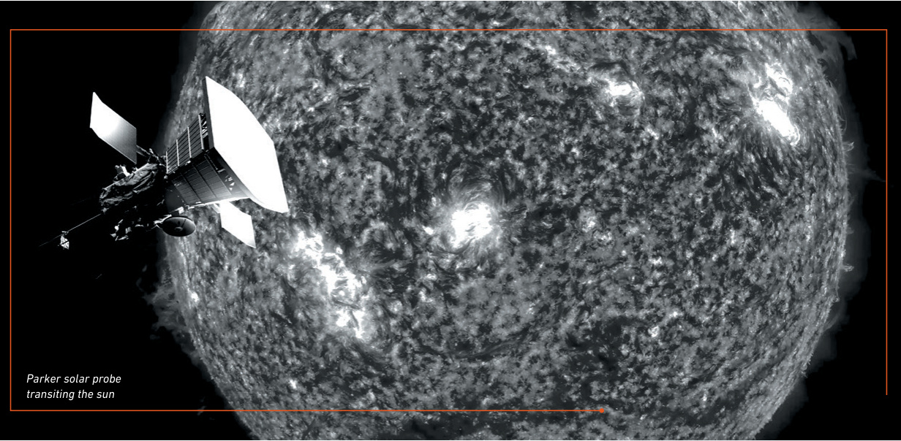
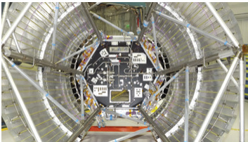
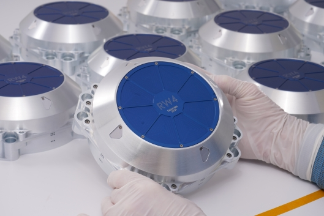

RTX (RTX)
W kontekscie: Fizyka orbitalna, orbity i operacje
RTX wchodzi w tematykę orbitalną przede wszystkim przez Blue Canyon Technologies, jednostkę w segmencie Raytheon. Blue Canyon dostarcza kompletne busy satelitarne (od 3U CubeSat po platformę Saturn-400 do 600 kg) oraz systemy kontroli orientacji i stabilizacji (ADCS) - rodziny XACT i FleXcore, koła reakcyjne (RW4, RW8 oraz RW16 o momencie 16 Nms dla statków co najmniej 400 kg), star trackery, żyroskopy momentowe (CMG) i systemy zasilania (dane: linkpack F1). To właśnie ADCS rozstrzyga o tym, czy satelita utrzyma precyzyjne wskazanie i wykona utrzymanie szyku konstelacji, a koła reakcyjne i star trackery są tu sercem pętli sterowania.
Siłą Blue Canyon jest najszerszy w branży katalog ADCS dla smallsatów połączony z udokumentowanym dziedzictwem lotnym: od 2014 wyprodukowano 3 500 lotnych kół reakcyjnych, wyniesiono ponad 83 małe satelity, zebrano ponad 160 zamówień na statki i umieszczono na orbicie ponad 2 700 komponentów (stan: kwiecień-sierpień 2026, dane: 🔵 Blue Canyon/RTX). Produkcja kół reakcyjnych jest rozszerzana z 650 do 2 400 sztuk rocznie (inwestycja ponad 1 mln USD, dane: 🔵 14 kwi 2026), co jest odpowiedzią na popyt ze strony konstelacji LEO. Dla orbitalnych centrów danych busy i ADCS Blue Canyon mogłyby obsługiwać mniejsze moduły lub demonstratory, choć katalog firmy celuje dziś w klasyczne smallsaty, a nie w skalowanie mocy do MW-GW.
Dla inwestora: Blue Canyon to jeden z niewielu dostawców turnkey smallsat/ADCS z masową produkcją kół reakcyjnych - przewaga to heritage i skala, nie pojedynczy produkt.
Materiały spółki
Grafiki z materiałów spółki / IR (prawa właściciela, użycie redakcyjne). Pełny rejestr:
Spolki/assets/_licencje.json.

1. Collins Active Thermal Control Systems (okładka datasheet). Źródło: materiały spółki / IR; licencja: materiały spółki / IR - prawa właściciela, użycie redakcyjne.

2. Parker Solar Probe - aktywny system termiczny Collins. Źródło: materiały spółki / IR; licencja: materiały spółki / IR - prawa właściciela, użycie redakcyjne.

3. Blue Canyon Technologies - produkcja kół reakcyjnych / ilustracja produktowa. Źródło: materiały spółki / IR; licencja: materiały spółki / IR - prawa właściciela, użycie redakcyjne.
W kontekscie: Chłodzenie i radiacyjne odprowadzanie ciepła
Drugą nogą RTX w tej dziedzinie jest Collins Aerospace, dostawca aktywnych systemów kontroli termicznej. Collins oferuje mechaniczne pompowane pętle cieczowe (amoniak, woda, HFE7200), wymienniki ciepła, cold plates, pompy, akumulatory, materiały zmieniające fazę oraz pętle dwufazowe (dane: 🔵 datasheet Collins, F1). To rozwija wprost wątek technologii pętli i układów dwufazowych, bo Collins dostarcza transport ciepła od źródła do radiatora, a nie sam radiator.
Przewaga Collins jest zakorzeniona w termice załogowej: firma dziedziczy po Hamilton Sundstrand liderstwo w systemach dla ISS (EATCS odprowadzające do 70 kW), Parker Solar Probe i Orion, a także dla komercyjnych satelitów broadbandowych oraz systemów laserowych/LIDAR (dane: 🔵 F1). To bezpośrednie dziedzictwo ISS - pętle amoniakalne w skali kilowatów, które teoretycznie skaluje się do MW. Oferowane parametry to obciążenia 1-150 kW, strumienie ciepła ponad 10 W/cm2, transport na odległości ponad 10 m i żywotność ponad 15 lat (dane: 🔵 F1) - cechy istotne dla wyzwania, jakim jest ekstrakcja ciepła z chipów AI bez wody i powietrza.
Dla inwestora: know-how termiki załogowej (ISS, Orion) daje Collins unikalne kompetencje dla przyszłych orbitalnych centrów danych o wysokiej gęstości cieplnej, ale dziś to portfel niszowy, nieraportowany osobno.
Pozycja rynkowa
Obie linie kosmiczne są ułamkiem ogromnego konglomeratu. RTX, największa na świecie spółka aerospace & defense (fuzja United Technologies i Raytheon, 2020), wykazała w FY2024 sprzedaż raportowaną 80,7 mld USD (+17 % r/r raportowane, +11 % organicznie, dane: 🔵 28 sty 2025) i backlog 218 mld USD. Segmenty były niemal równe: Collins Aerospace 28,3 mld USD (35 %), Pratt & Whitney 28,1 mld USD (35 %) i Raytheon 26,7 mld USD (33 %) (dane: 🔵 28 sty 2025).
RTX nie raportuje osobno segmentu "space". Wpływ Blue Canyon i kosmicznej termiki Collins na przychody jest NIE UJAWNIONY; jako fragment odpowiednio Raytheon (26,7 mld USD) i Collins (28,3 mld USD) każda z tych nisz to szacunkowo poniżej 1 % całkowitych przychodów RTX (oszacowanie własne na bazie F1, brak danych segmentowych). Należy to powiedzieć wprost: te dziedziny są marginalne dla skali grupy. Mimo to pozycja produktowa jest mocna - Blue Canyon należy do czołówki dostawców smallsatów, ADCS i kół reakcyjnych nowej ekonomii kosmicznej, a Collins jest uznanym dostawcą aktywnych systemów chłodzenia dla platform załogowych i bezzałogowych.
Ryzyka
Pierwsze i podstawowe ryzyko jest odwróceniem przewagi: marginalna ekspozycja oznacza, że nisza nie porusza wyceny. Space i thermal to ułamek procentowy sprzedaży, a głównymi driverami pozostają komercyjne silniki lotnicze, obrona i aftermarket - sukces orbitalnych centrów danych nie zmieni istotnie wyniku grupy, a porażka go nie zagrozi.
Drugie ryzyko to cykliczność i koncentracja zamówień rządowych. Zamówienia satelitarne i obronne są projektowe, długocyklowe i uzależnione od budżetów NASA, DoD i Space Force; opóźnienia lub redukcje programów (np. Landsat Next, proliferated LEO) uderzają bezpośrednio w przychody Blue Canyon i kosmicznej części Collins, bo brak alternatywnego, masowego rynku komercyjnego dla tych specjalistycznych podzespołów.
Trzecie ryzyko to konkurencja specjalistów i integratorów. W ADCS i kołach reakcyjnych presję budują dedykowani gracze - obok CubeSpace także AAC Clyde Space i GomSpace - którzy szybko iterują na rynku smallsat. W kontroli termicznej dominują integratorzy (Lockheed Martin, Northrop Grumman) oraz specjaliści (Advanced Cooling Technologies, Boyd/Thermacore), którzy mogą wyprzedzić RTX w szybko rosnącym segmencie orbitalnych centrów danych. Dla zdywersyfikowanego RTX te nisze nie są priorytetem inwestycyjnym, co zwiększa ryzyko utraty tempa wobec wyspecjalizowanych rywali. Główni konkurenci wg F1 to Honeywell, Northrop Grumman, Airbus Defence & Space i Lockheed Martin, a w ADCS dodatkowo Northrop Grumman, AAC Clyde Space i GomSpace.
Powiązane spółki
Inne notowane spółki z raportu dzielące z tą firmą co najmniej jeden wątek tematyczny (wspólny rynek, technologia lub łańcuch wartości).
- Airbus SE (AIR) - PV (Sparkwing), optyka (Tesat), busy, serwis (EU)
Wspólne wątki: Fizyka orbitalna; Chłodzenie. - Northrop Grumman Corporation (NOC) - Serwis GEO (MEV/MRV), busy, radiatory, ogniwa
Wspólne wątki: Fizyka orbitalna; Chłodzenie. - Redwire Corporation (RDW) - Panele ROSA, struktury rozkładane, montaż on-orbit, radiatory Q-Rad
Wspólne wątki: Fizyka orbitalna; Chłodzenie. - Eaton Corporation plc (ETN) - Zasilanie DC (UPS, switchgear) + chłodzenie (Boyd Thermal)
Wspólne wątki: Chłodzenie. - Lockheed Martin Corporation (LMT) - Busy satelitarne, serwisowanie, ULA (launch)
Wspólne wątki: Fizyka orbitalna. - MDA Space Ltd. (MDA) - Robotyka kosmiczna (Canadarm), busy, anteny
Wspólne wątki: Fizyka orbitalna. - Rocket Lab Corporation (RKLB) - Launch (Electron/Neutron) + Space Systems: bus, ogniwa SolAero, komponenty
Wspólne wątki: Fizyka orbitalna. - Vertiv Holdings Co (VRT) - Zasilanie i precyzyjne/cieczowe chłodzenie DC
Wspólne wątki: Chłodzenie. - Voyager Technologies, Inc. (VOYG) - Stacje kosmiczne (Starlab), systemy kosmiczne i obronne
Wspólne wątki: Fizyka orbitalna.
Linkują tutaj
12 powiązanych notatek
- Mapa raportu Orbitalne / kosmiczne centra danych
- Sekcja Fizyka orbitalna, orbity i operacje
- Sekcja Chłodzenie i radiacyjne odprowadzanie ciepła
- Spółka Airbus (AIR)
- Spółka Eaton (ETN)
- Spółka Lockheed Martin (LMT)
- Spółka MDA Space (MDA)
- Spółka Northrop Grumman (NOC)
- Spółka Redwire (RDW)
- Spółka Rocket Lab (RKLB)
- Spółka Vertiv (VRT)
- Spółka Voyager Technologies (VOYG)